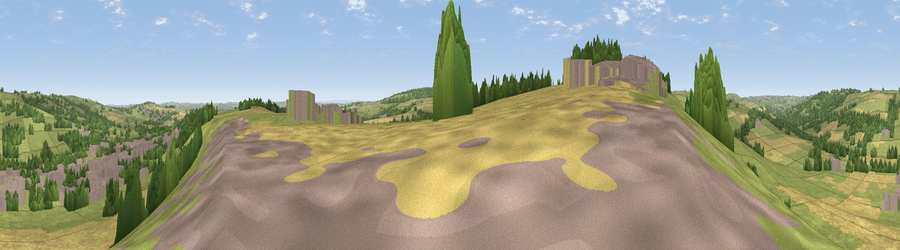

Viewpoint near Esh
#18815 in England · top 42% of its area beats it · near EshWhere it is
The exact computed spot (NZ 20125 44125). Click the marker for map links.
The view, rendered

A 360° render of this exact spot computed from the terrain model, tree cover and land cover — summer colours, afternoon light, calibrated against photographs of famous viewpoints. Real trees, hedges and buildings will differ in detail.
The panorama
Grey silhouette: terrain skyline in each direction (720 bearings, Earth curvature and refraction included). Dashed green: skyline with trees (+15 m) and buildings (+8 m) as obstacles. Blue strip: how far the ground is visible on each bearing.
Where the view opens
Wedge length = distance to the farthest visible ground on that bearing (vegetation-aware). Rings at 10, 25 and 50 km.
What fills the view
44% grassland · 33% cropland · 14% woodland · 8% built-up
Angular shares of the visible panorama (visual magnitude), not map area. Landscape diversity 0.53 (0–1 Shannon).
Key numbers
More beautiful places nearby
The staircase of upgrades: each row has a higher view potential than everything closer. Driving times are estimates from straight-line distance, calibrated against real road routing — check an actual route before setting out.
| Place | Direction | Drive | Score |
|---|---|---|---|
| Viewpoint near Esh | SW · 1 km | ~4 min | 57.8 |
| Greenland Bank | WSW · 1 km | ~4 min | 58.3 |
| Viewpoint near Burnhope | N · 3 km | ~7 min | 62.2 |
| Brandon Hill | S · 4 km | ~9 min | 69.7 |
| Viewpoint near Edmondsley | NNE · 4 km | ~10 min | 72.6 |
| Pontop Pike | NNW · 10 km | ~20 min | 77.8 |
| Viewpoint near Newton Under Roseberry | SE · 44 km | ~64 min | 78.3 |
| Viewpoint near Lazenby | SE · 45 km | ~65 min | 86.4 |
54.79162, -1.68854 · source: screening · position refined by local search. Computed location — check access rights before visiting.